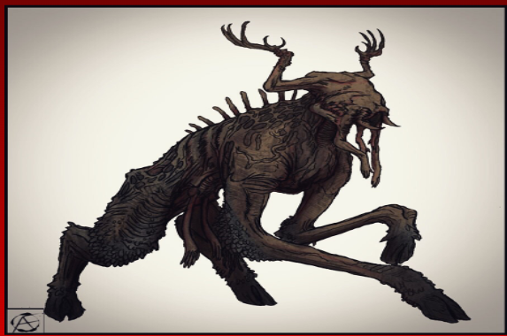

Histoire
Erased Memories raconte l'histoire de Jonas, un homme parti en vacances avec sa famille dans la ville de Nordmarka, en Norvège. Il s'installe dans la maison ancestrale, propriété de sa famille depuis des siècles, où il a déjà séjourné par le passé. Les premières semaines se déroulent sans encombre, baignant dans une atmosphère de sérénité. Cependant, ce bonheur est brutalement interrompu lorsqu'un jour, à son retour de chasse, Jonas fait une découverte macabre : les corps sans vie de ses enfants pendus au plafond du salon, et la disparition inexpliquée de son épouse. Ce drame, aussi terrible soit-il, n'est que le prélude à une horreur plus profonde. Jonas devient rapidement la cible d'un complot fomenté par une secte dont le but ultime est de ressusciter leur divinité.
Genre
Notre jeu est un Survival Horror immersif qui vous plongera dans une atmosphère sombre et oppressante. Explorez un univers rempli de mystères, où chaque instant est marqué par une tension palpable, des choix cruciaux et une lutte constante pour votre survie.

Gameplay
Le joueur qui incarne Jonas doit trouver un moyen de se suicider pour empêcher le Jotun de prendre possession de son corps. Pour cela, il pourra déverrouiller l’accès à certains objets qui pourraient l’aider. En face, le joueur qui contrôle le Jotun doit tout faire pour l'en empêcher en le traquant sans cesse.